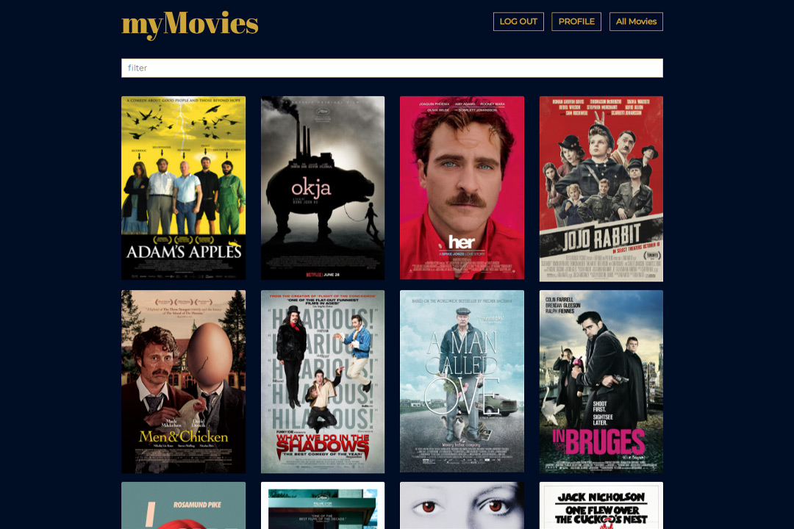
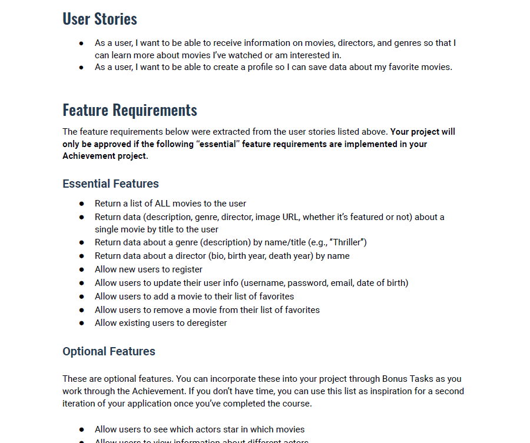
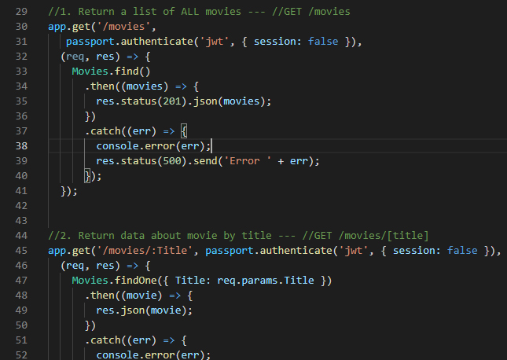
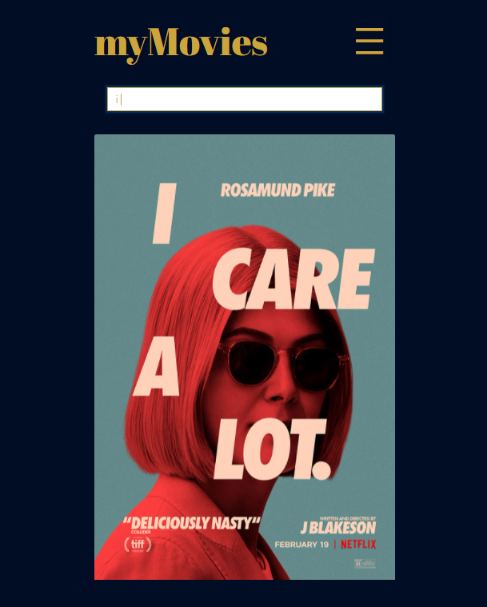
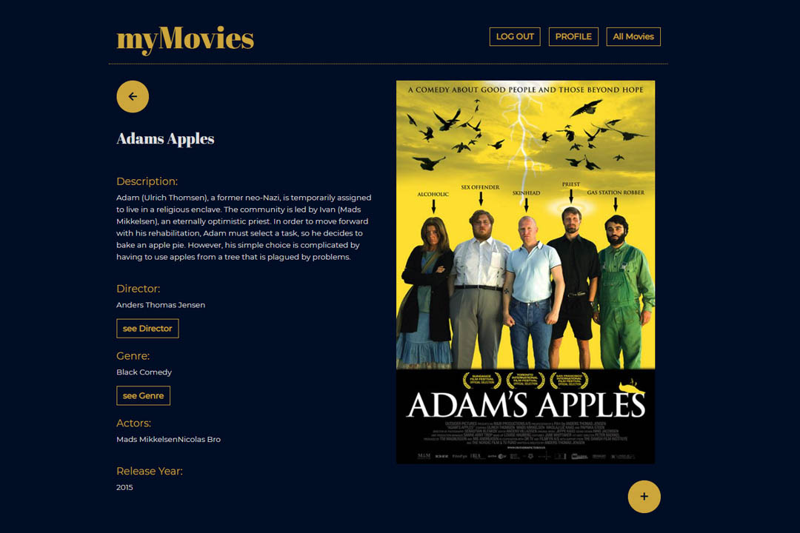
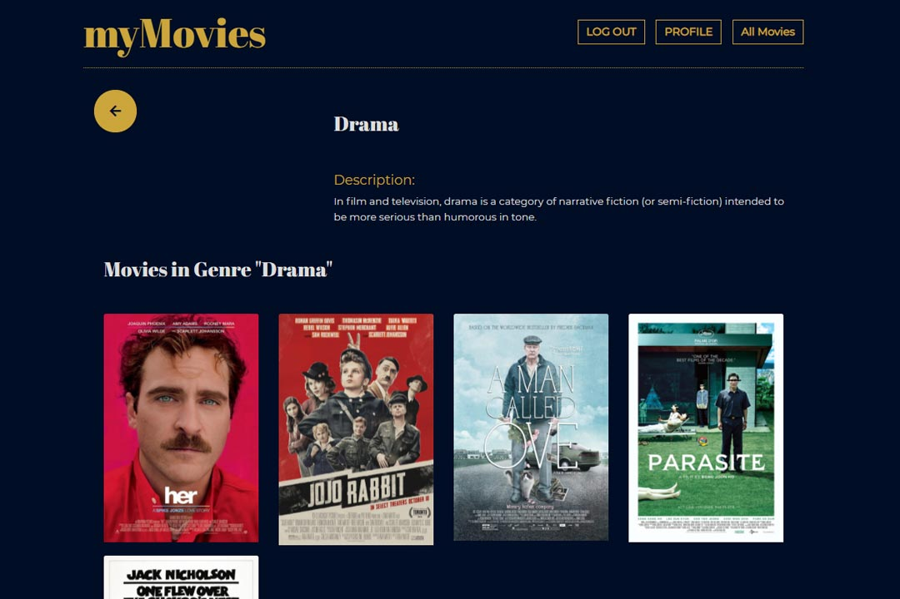
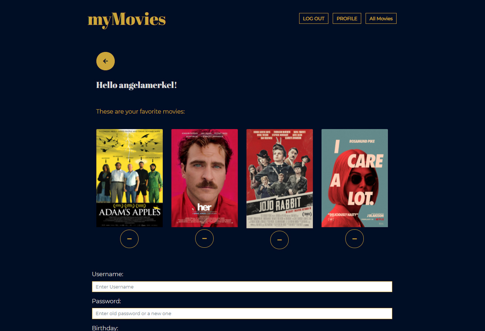
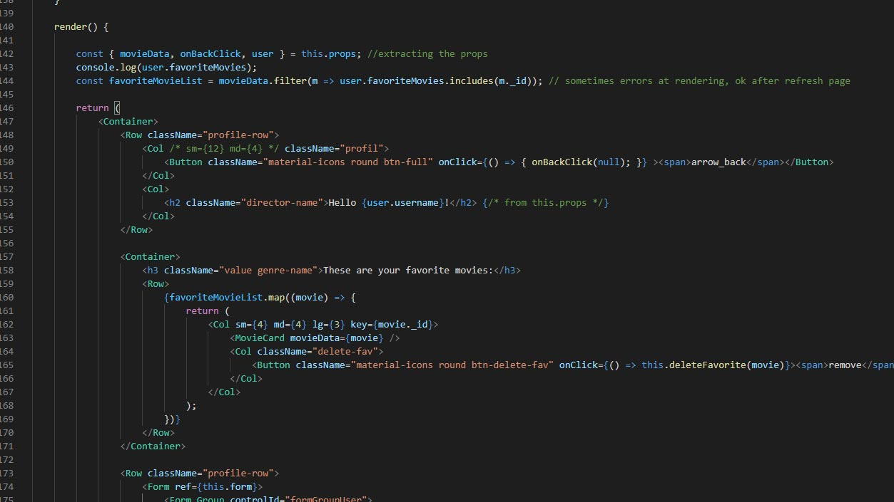

myMovies App (React)
Case Study
Über das Projekt
myMovies ist eine Web-App für Filmfans, die Informationen zu Filmen, Regisseuren und Genres bietet.
Nutzer können ein Profil erstellen, ihre Daten aktualisieren und ihre Lieblingsfilme sammeln.
Das Projekt umfasste die Entwicklung einer RESTful API, den Aufbau der Datenbank mit MongoDB
sowie die Implementierung der Client-Seite unter Verwendung von React/Redux und Bootstrap.

myMovies App in Benutzung
Ziel
Ziel des Projekts war es, eine Webanwendung mit Full-Stack-JavaScript-Technologien zu erstellen
Schaufenster für mein Portfolio.
Das zu lösende Problem bestand darin, die komplette Server- und Clientseite für das zu erstellen
Anwendung von Grund auf.
Um dies zu erreichen, sind JavaScript-Entwicklung, Webserver-Frameworks, Datenbanken, Geschäftslogik usw.
erforderlich. Die Authentifizierung musste mithilfe des MERN-Tech-Stacks gemeistert werden.

Screenshot der fertigen App (main view und movie list)
Kontext
Die Anwendung „myMovies“ entstand im Rahmen des Webentwicklungskurses bei CareerFoundry mit dem Ziel,
Kompetenzen in React und Redux aufzubauen, eine Verbindung zu einer selbst erstellten API herzustellen,
eine Datenbank anzulegen und Bootstrap für die Benutzeroberfläche zu implementieren.
Die Projektaufgabe beschrieb die Funktionen und Anforderungen präzise,
und die Übungen waren so strukturiert, dass sie diesen Vorgaben folgten.

Projektbeschreibung CareerFoundry (source: CareerFoundry)
Lösungsansatz
Um eine App zu entwickeln, die Filmfans mit Informationen versorgt, waren sowohl eine Serverseite zur Speicherung aller Daten als auch eine Clientseite mit der Benutzeroberfläche erforderlich, die es den Fans ermöglicht, mit diesen Informationen zu interagieren.

Erstellen der Endpunkte in der API
1. Schritt: Erstellen der Serverseite
Der erste Schritt bestand darin, eine RESTful API mit Node.js und Express zu erstellen.
Hierfür musste der Code mit den HTTP-Methoden für die Endpunkte geschrieben werden,
wobei die User Stories aus der Projektbeschreibung berücksichtigt wurden.
schließend wurde die Datenbank mit MongoDB eingerichtet.
2. Schritt: Erstellung der Client-Seite
Im zweiten Teil der App-Erstellung habe ich die Komponenten mit React erstellt.
Die Hauptansichtskomponente enthielt das App-Routing, und es musste eine Registrierung und eine vorhanden sein
Login-Komponenten, die die Authentifizierung übernehmen.
In der Hauptansicht wird eine Liste der Filme angezeigt, basierend auf einer Funktion, die alle Filme abbildet und
Erstellt Filmkartenkomponenten.
Filmansicht, Regisseur- und Genreansicht erhalten detaillierte Informationen aus der Datenbank und werden angezeigt
sie.
Funktionen zum Hinzufügen und Löschen eines Films aus einer Favoritenliste sowie zum Aktualisieren und
Benutzerdaten löschen.
Zu diesem Zeitpunkt kam der erste Teil des Projekts, die Serverseite, zusammen mit dem Client
Seite - alles verbunden und über die Benutzeroberfläche zugänglich.

Hauptansicht mit Filmliste und Suchfunktion

Filmansicht mit Details zum Film

Profilansicht mit den Lieblingsfilmen des Nutzers und einem Formular

Profilansicht mit den Lieblingsfilmen des Nutzers und einem Formular

Filtern der Lieblingsfilme eines Nutzers in der Profilansicht
Reflektion
Es war eine Herausforderung, die allgemeine Struktur von React sowie die Verwendung
von Props und State zu verstehen – also wie die Dinge zusammenhängen, wie Daten zwischen
Komponenten weitergegeben werden und wie man in den Funktionen auf die Daten aus der
Datenbank zugreifen kann.
Zudem fiel es mir schwer, den richtigen Ansatz für das Filtern der Lieblingsfilme eines
Nutzers und die Implementierung der Authentifizierung zu finden.
Um den Überblick zu behalten, holte ich mir Unterstützung bei meinem Mentor und einem
React-Entwickler aus meinem Bekanntenkreis.
Zeitlicher Umfang und nächste Schritte
Die Entwicklung beider Teile der Anwendung – sowohl der Server- als auch der Client-Seite – hat mich insgesamt etwa zwei Monate gekostet.
Als Nächstes steht das Refactoring des Codes mit Redux Thunk an, um den Code anders zu strukturieren und die Funktionen zu isolieren. Zudem könnten die Schaltflächen in der Profilansicht noch überarbeitet werden.